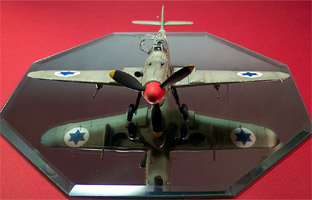

{kind=link}
{kind=link}
{kind=link}
{kind=link}
{kind=link}

Hobbycraft 1/48 Scale Avia S-199 "Mule"
Kit #1524 MSRP $14.98
Images and text Copyright © 2004 by Matt Swan
Developmental Background
It seems somewhat ironic to me that the last production version of the aircraft that provided airpower for the ethnic and religious oppression of the Nazi regime was instrumental in the survival of the newborn Jewish nation, Israel. Israeli agents negotiated the purchase of Avia S-199s from the Czechoslovakian government in defiance of an arms embargo that Israel faced at the time. Twenty-five aircraft designated Sakeen ("knife") by the Israelis were obtained, and all but two were eventually delivered. The first examples arrived on May 20 1948, six days after Israel's declaration of independence, and five days after the commencement of hostilities by Egypt. The first weeks of fighting had not gone well for the newly born Israel Defense Forces, with an Egyptian armored column progressing on Tel-Aviv and threatening to destroy the newly born state, while enemy aircraft roamed the skies unchallenged, bombing Israeli cities. On the evening of May 29 Four S.199s took off from Tel-Nof, where the fighters were based, to attack the Egyptian forces headed for Tel-Aviv. The fighters descended on the surprised Egyptians and began to bomb and strafe them but one crashed before completing his mission.
The appearance of an Israeli fighter arm was a complete surprise to Arab commanders and, while causing little damage, had a great psychological effect, which halted the enemy's advance and allowed ground forces to organize and go on the offensive. A few days later, on June 3, the newly born Israeli Air Force got its first fighter “Ace”. Two Egyptian C-47 bombers had just dropped their bomb loads over Tel Aviv and began making their way home when they were attacked by a lone S.199. It was “D-120” piloted by Modi Alon, Israel’s first fighter squadron leader. Both bombers were shot down, signaling an end to Arab domination of the air.
In Czechoslovakia, Avia had started building Messerschmitt Me 109G14s immediately after the Second World War as the Avia S-99, but soon ran out of the 109's Daimler-Benz DB 605 engine. The S-199 continued to use the Me 109G14 airframe but with none of the original engines available, the Junkers Jumo 211 engine and propeller from the Heinkel He 111 bomber were used instead. The result of this compromise was an aircraft with extremely poor handling qualities. The substitute engine lacked the responsiveness of the Daimler-Benz unit, was heavier, and the torque created by the massive paddle-bladed propeller made control very difficult. This latter flaw, combined with the 109's narrow-track undercarriage also made landings and take-offs extremely hazardous. A final hidden danger lay in the synchronization gear which did not seem to work properly, leading a few Israeli aircraft to shoot off their own propellers. Czechoslovakian pilots nicknamed it Mezek ("Mule") as a result of its difficult ground handling characteristics.
In combat with the IAF, the type proved unreliable and performed poorly but was better than nothing. Furthermore, maintenance problems meant that no more than five aircraft were typically airworthy at any one time. The Avias were withdrawn from service by the end of October 1948, at which time, only six remained operational. An example is preserved at the Israeli Air Force Museum at Hazterim. In Czechoslovakia production ended in 1949. The last examples were withdrawn from Czechoslovakian service (with their National Security Guard) in 1957. Some 550 S-199s were built, including a number of conversion trainers designated CS-199 (armed) and C-210 (unarmed).
The Kit
I had actually started this kit a few years ago and lost interesting in it after a few days on the workbench. This is why you’ll see the cockpit tub partially assembled. The kit contents are not very numerous with just a few trees of parts done in light gray injection molded polystyrene. The parts do feature engraved panel lines and control surface detail. There is very little evidence of flash, no obvious injector pin markings that need removed or sink holes. Interior cockpit detail is not very good and could use a replacement package. The lower wing panel has a multitude of flashed over mounting holes that seem to be intended for several different version of the 109 and you have to drill out the correct mounting holes for the craft you are building. The top wing panels also have mounting holes that are flashed over and must be cleared to install the wheel well expansion pieces.
General parts fit is good with the fuselage panels and main wing panels lining up nicely. The gun breech panels that are characteristic of the G models come with two extension pieces molded in place, one of which will need to be removed for most versions of the 199. On the parts tree there is a hand crank for the engine but you need to drill a mounting hole for that piece if you choose to install it. All the control surfaces and leading edge slots are molded in place and the wing radiators are cast in the full closed position. The small sprue of clear parts included with the kit feature a two-piece canopy, a clear gunsight and a couple of pieces of armor plate. The clear parts display good clarity and finely raised fame lines; they will do nicely with a quick dip in Future. Overall we have five clear parts and seventy gray plastic pieces for a total of seventy-five pieces in the box.
Decals and instructions
The instruction packet for the kit consists of a full size six panel fold-out that begins with a brief list of kit features and a paint code chart. Paints are listed by color, by Floquil number, Humbrol number and Testors Model Master number for those that actually match up. The next three panels are comprised of seven exploded view construction steps along with various instructions on which flashed over holes to drill out, model variation tips and color call-outs. The remaining two panels cover exterior paint schemes and decal placement for five different aircraft. The kit as an out-of-box project is a fairly simple build and the instructions do a good job of covering it.
Now as I just mentioned we have decals for five different aircraft that are billed as “the first accurate markings for Israeli military Avias ever offered.” I’m not really in a position to say whether this is true or not but I can say that they look pretty good. Print registry looks to be right on the mark, color density seems good and the decals are not excessively thick. All basic markings are provided along with an adequate supply of service stencils and a few different marking that are of debatable existence. Overall, a good-looking sheet of decals.
Conclusions
To say that this aircraft is historically significant is an understatement, without its existence the fate of the Israeli Nation may have been very different. The overall parts fit on the model is very good, the general exterior detail is good while the interior detail is somewhat lacking. The instructions are clear and logically laid out, decals are good and provide plenty of options for Israeli aircraft. There are a few aftermarket items specifically aimed at this bird from Aires like a cockpit set, an engine set or a combination set. Eduard has a really nice photo etched set for the kit, Engines and Things offers a Junkers Jumo 211 engine set, Tally-Ho has two different decal packages and Moskit has a metal exhaust package. AeroMaster also offered a decal set that was a slight improvement over the kit offering.
At first glance it looks like a Messerschmitt that got a solid punch in the nose and will make an excellent addition to any Messerschmitt collection. Inexpensive and accurate, I give this kit a good recommendation.
Construction
Construction begins in a very straight-forward manner with the cockpit. I’m using the Eduard PE set and have shaved all the kit detail off before beginning actual construction. I elected to use RLM-66 as my base color. In all reality the interior color of the S-199 may have been a lighter gray. Putting all those little PE pieces in place took a bit of time and considerable patience but at last it was completed. One item was lacking in both the base kit and the Eduard package – that was the fuel line that runs across the right side of the cockpit. This I built from some fuse wire painted yellow with a spot of silver to represent the clear sight glass.
The lap belts were installed prior to gluing the cockpit tub in place and the shoulder belts will be installed after the fuselage has been assembled. In putting the two halves of the fuselage together I found the short propeller shaft had a very loose fit and the hole had to be reduced with some styrene sheet and yet more had to be layered inside the nose to help hold the shaft firmly. So far this is the only construction problem but the build is still young.
10/15/04
The fuselage can now be closed up, both halves aligned nicely but the hood piece seemed to want to sit a little low. Immediately after applying Tenax 7R to the hood seam I gently lifted in a fraction of an inch to help it line up with the rest of the fuselage. The seam around the cockpit was cleaned up and the shoulder harnesses were installed. From here the three PE mounting brackets for the armor plate were glued down and the plate was installed. The support rod is made from some medium magnet wire. All of this work is painted with RLM 66 Black Gray then sludge washed.
Next I turn my attention to the wing for modification. I have already drilled the mounting holes for the under-wing cannons, the upper landing gear bulges and the lower aerial. The landing gear bulges have also been glued in place. Next comes some more of this really cool Eduard PE stuff. I cut off the upper and lower wing radiator doors with a razor saw and a Xacto blade then clean the edges with a flat diamond file. All interior areas were painted with RLM 02. The front and back radiator faces have been painted Burnt Iron and superglued in place. In the picture to the left you can see the radiator faces in place and laying to the side are two of the replacement doors, note the etched mark for the interior ribs. There are two interior ribs that will be mounted to each door. I still have to install the front radiator grates over the face plate, that will be next.
10/30/04
As I am working on the wing radiators I realize that should someone from the infamous flashlight brigade look into the open radiator flaps they would be able to see somewhat into the inner wing. Just to give that intrepid viewer something to look at I bent a few pieces of medium magnet wire and glued them in place as coolant lines running back to the engine. These were painted a medium brown and the surrounding inner surfaces were done with some RLM-02. The outer front radiator faces were glued on next. I considered dropping the flaps also but have done this on a few 109s previously and want the shelf display to look a little different than all the rest so decided against this. Now I feel I am ready to assemble the wing panels, once the glue set I found out I was not ready – forgot to put in the PE landing gear bay panels!
Once you think you have a handle on things you find out that you don’t. The Eduard panels that insert over the tires should have been installed before closing the wing so now I have to open the front seam with a scalpel enough to be able to slide these pieces in place. With patience and a dental pick I manage to place both panels and close the seam back up. Only minor damage was done to the seam and a touch of putty took care of that. Now the wing gets glued to the fuselage. Minor amounts of putty were needed to fair in the front and back seams and a tiny amount was needed along the wing root. With the wing in place I can install the radiator flaps. Previously I had cut the PE flaps and ribs free from the main sheet and assembled the pieces. Laying a fine bead of superglue along the trailing edge of the wing surface I touched the flap to it and added a bit of accelerator. Upper and lower flaps were placed and adjusted for degree of open.
Since this aircraft is pretty much all RLM-02 I can install the landing gear struts now also. Usually I will wait until after primary painting has been done before doing this. First I added a couple of brake lines to the struts from some fine magnet wire and some hold-down straps from thin strips of masking tape. The under-wing cannons were put together and the barrels were drilled out then they were attached to the wings. I also added the mass stabilizers to the ailerons and the drop tank hardware at this time. This one will be heading to the paint room before too much longer.
These are linked pictures so you can click on them to view larger images
11/19/04
There has been a slight delay in construction as I ran out of RLM-02 paint and had to wait for a new shipment to arrive. At last it is here but while I waited I spent time looking over the model for defects and applying my primer. The primer is my basic Model Master primer gray cut 30% with lacquer thinner.
This was allowed to cure for several days then I came back with some Testors Silver. Yep, that’s what I said – Silver. I want to create some slight paint chipping around the leading edges and some service panels and I will do that with the basic Salt Chipping Method. The image to the right is linked so you can click on it to view a larger picture. Once the salt had dried in the selected areas the model was ready for some color coats of paint. I’m using Gunze-Sangyo RLM-02 acrylic paint cut with Windex. Once the entire model had a good coat of this paint I then took a small amount of RLM-02 and lightened it with 25% acrylic white. This was loaded into the airbrush and air pressure was reduced to about 12 PSI. From about a six-inch range I lightly painted the interior areas of all the upper panels to create sun fading.
The model was allowed to dry and the salt crystals were removed with a toothpick. The areas where the salt crystals were were washed carefully with a damp cotton swab to remove any salt residues and then the model was coated with Future floor polish. Recently I have found that by adding about 1 part 50% isopropyl alcohol to 3 parts Future I get a really nice finish and have little to no risk of the dreaded Orange Peel effect. Two coats of Future are applied and the model is allowed to cure in preparation for decals.
11/21/04
I elected to model this as aircraft 114.7 which has no red tail strips and does not have the large chin radiator. These decals are coming from the Aero Master Avia S-199 sheet and are just a little bit on the thick side. I had to treat them twice with Gunze Mr. Marker Soft to get them to settle into the panel lines well. While these were drying I masked the canopy pieces (I’m using a Squadron Vac canopy for the 199) and shot it with some RLM-66 for interior frame color. This was followed with some RLM-02 and it was hung up to dry.
After drying overnight the model was sealed once again with Future and set aside to cure. The masks were removed from the canopy and the Eduard PE details were installed with Testors Clear Parts Cement. Later this same day I came back to the model and started the sludge wash. The propeller and spinner were attached along with the landing gear doors and drop tank. One last trip to the paint room for some Tamiya X-19 Smoke around the exhaust ports and cowl machine guns. This was allowed to set in the paint booth for a few hours then the final coat of Polly Scale clear flat was applied. The final details are now added like the reflector gun sight, canopy and aerial. The canopy retention line was made from a fine piece of magnet wire wrapped around a sewing needle, cut to length and painted silver. It was attached with a dab of super-glue followed with some accelerator to prevent fogging of the plastic. For display the model is placed on a beveled mirror I purchased from my local arts and crafts store for three bucks.

You can click on the images above to view larger pictures
This really was not a difficult kit to build, the important things to watch for are that you drill out all the correct holes in the wing prior to assembly and if you are using the Eduard detail package make sure you place the inner faces of the wheel wells before you glue the wing upper panels in place. Inside the cockpit the hardest piece of assembly was the little chains on the trim wheel from Eduard – these are so fine that they virtually fall apart in your fingers so extreme care is needed while handling them. In retrospect I think I probably should have dropped the flaps also. Maybe I should get another one of these and do it in Czech markings with a blown canopy …. Hmmmm, something to think about.


{kind=link}
{kind=link}
{kind=link}